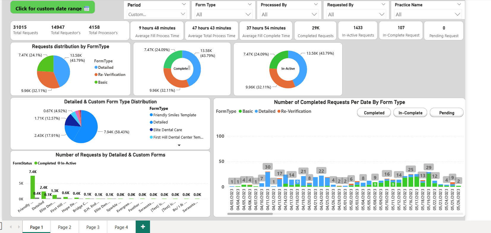

Data Analyst | Machine Learning Enthusiast
Gold Medalist B.Tech graduate specializing in Data Analytics with expertise in Python, SQL, Power BI, and Machine Learning. Proven track record of automating data pipelines, building predictive models, and delivering actionable insights through interactive dashboards. Passionate about leveraging data to drive business decisions and solve complex problems.
Enjenious, Delhi, India
Situation: The company faced a critical operational bottleneck with manual data extraction processes affecting over 10 million product records, leading to delays and inconsistencies in decision-making across departments.
Task: Redesign the data extraction and validation workflow to eliminate manual processing, enhance accuracy, and enable real-time business intelligence for stakeholders.
Action:
Result:
MicroTechnology Pvt. Ltd, Bhopal, Madhya Pradesh
Situation: The company’s internal data flow between backend and frontend systems suffered from frequent synchronization issues, affecting reporting accuracy and increasing database errors.
Task: Develop a robust API-driven data management system and streamline business intelligence workflows.
Action:
Result:
PW Skills, Remote
Situation: As part of an applied analytics program, I worked on multiple business datasets that lacked structure and consistency, affecting their usability for insights and visualization.
Task: Apply the full data analytics lifecycle to clean, analyze, and visualize real-world datasets while documenting insights for stakeholders.
Action:
Result:
Chegg Inc.
Situation: Thousands of JEE and NEET students needed clear, step-by-step guidance for complex Physics and Chemistry concepts.
Task: Deliver accurate, easy-to-understand academic explanations with detailed solutions while maintaining quality standards.
Action:
Result:
Situation: The marketing team struggled with effective customer targeting on a massive 1M+ customer base that lacked segmentation insights, resulting in generic campaigns and low conversion rates.
Task: Design and deploy a scalable, ML-powered customer segmentation platform capable of handling large datasets and generating real-time predictive insights to support personalized marketing strategies.
Action:
Result: Improved marketing segmentation accuracy by 22%, enabled real-time targeting through APIs, and reduced data processing latency by 40%, directly boosting campaign efficiency.
Situation: Investors needed accurate insights into stock price movements to make data-driven decisions, but available tools lacked proper forecasting accuracy and visualization.
Task: Create a time-series forecasting tool to analyze historical stock data, visualize patterns, and predict future prices using regression techniques.
Action:
Result: Improved forecast accuracy by 15% compared to baseline models, reduced prediction error (RMSE) by 20%, and delivered a clean visual analysis tool for investors.

Situation: The sales department relied on manual Excel reporting from various sources, causing delayed insights, data inconsistencies, and limited visibility into sales performance.
Task: Automate the reporting process and design an interactive Power BI dashboard to consolidate multi-source data into one real-time, decision-ready view.
Action:
Result: Reduced reporting time by 30%, enhanced data accuracy, and empowered the leadership team with live insights that guided revenue-focused decisions.
G.K.V., Faculty of Engineering and Technology (IIIT), Haridwar
CGPA: 9.23/10
Completed a comprehensive program designed to master the complete Data Analytics lifecycle — from data collection and preprocessing to visualization and reporting. Gained hands-on experience with:
This certification strengthened my end-to-end analytical proficiency and problem-solving skills for data-driven business decision-making.
Verified Python proficiency through hands-on coding assessments on HackerRank. Key topics and skills demonstrated include:
This certification validated my foundational programming logic, enabling efficient coding and analytical automation using Python.
Completed an in-depth course focused on data visualization, data modeling, and business intelligence using Power BI. Core modules and outcomes include:
This certification enhanced my ability to transform raw datasets into compelling visuals for data-driven business storytelling.
Earned certification for strong command over database querying and optimization using SQL. Covered a wide range of analytical database operations, including:
This certification strengthened my data extraction, cleaning, and transformation abilities, enabling accurate data preparation for analytics and reporting.